Apartment Block
A two-storey Clerkenwell flat rebuilt around 30,000 hand-cut oak blocks, three-metre sash windows and linen-lined shutters that hold the south light.
A flat rebuilt in oak.
The starting point was a dark, awkwardly laid-out flat over two floors of a Victorian building, with a few original features hidden under later work. The clients wanted to keep what was there and rebuild around it.
The plan was reworked to put the kitchen and a convertible dining room under a new mezzanine, with sliding pocket doors that let the rooms run together or close down. The original three-metre sash windows were brought back into use and given new shutters lined with translucent linen, so the south light reads as soft surface.
The floor is 30,000-plus hand-cut blocks of European oak, laid through the living and circulation areas. Where the original glazed green bricks survived, we kept them — the new oak and the old brick carry most of the room together.
Winner of the RIBA London Award and the NLA Don't Move, Improve Award, 2020.
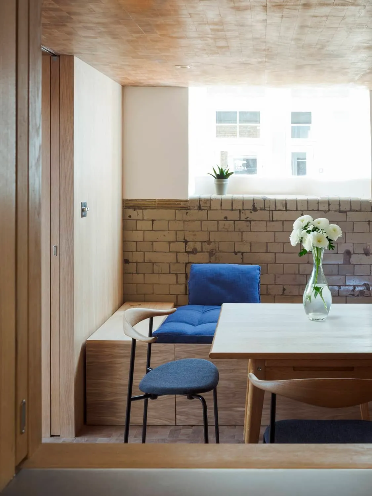
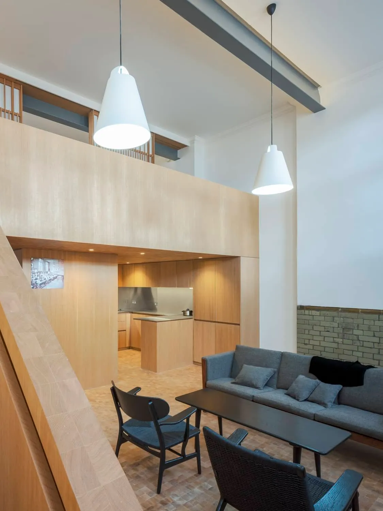
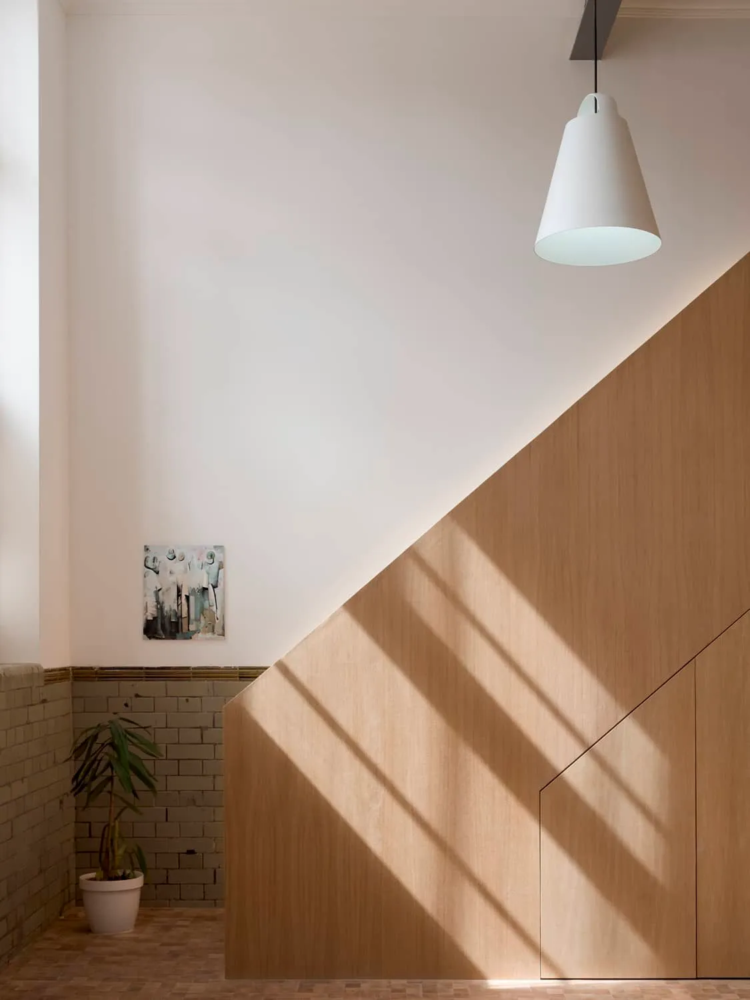
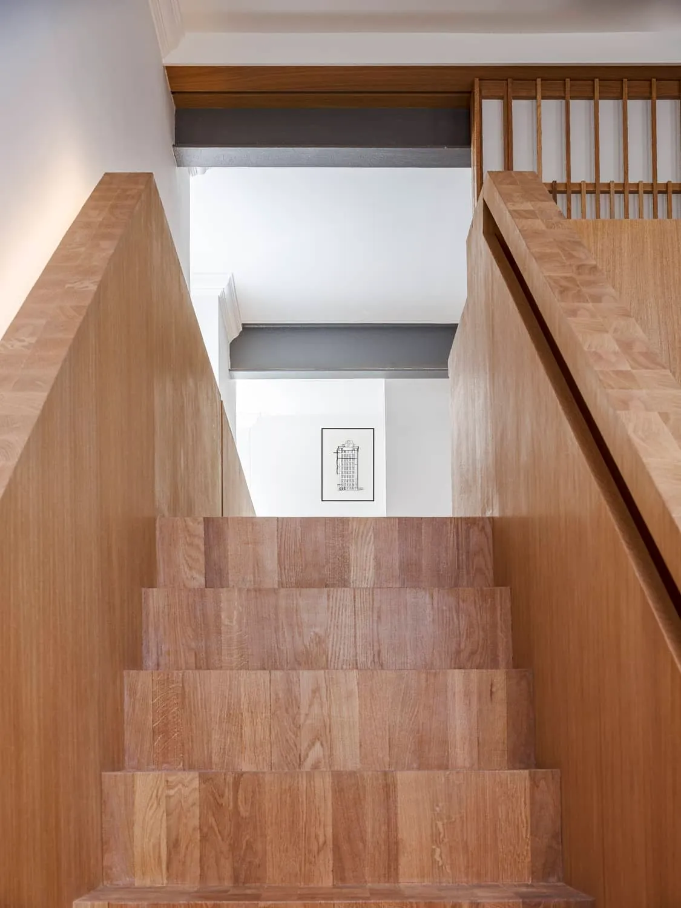
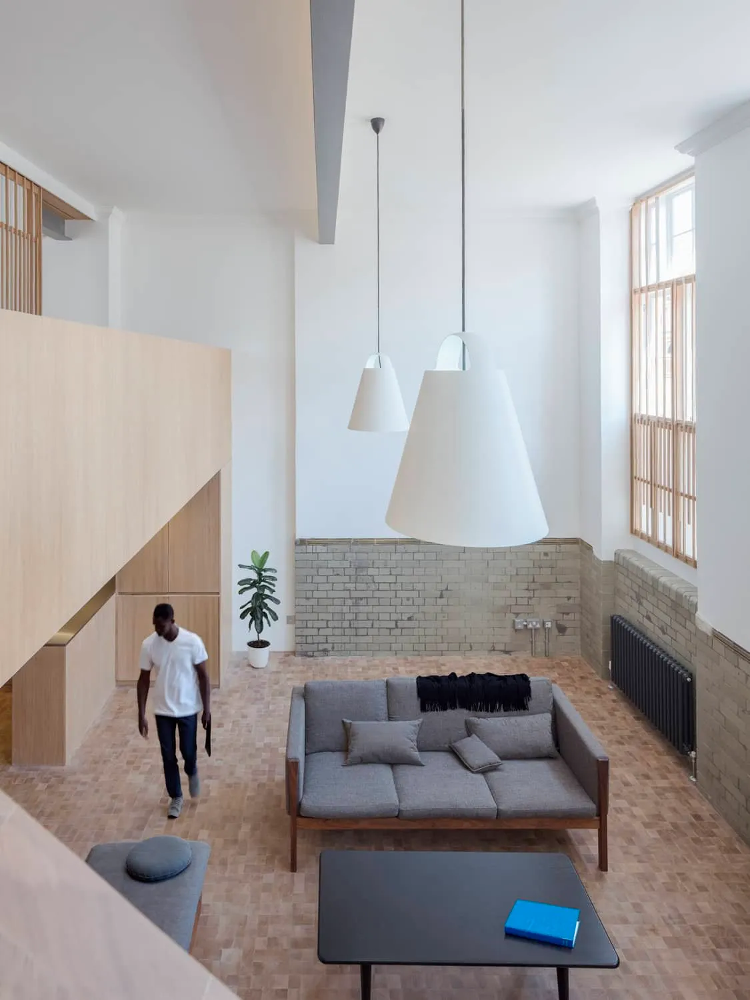
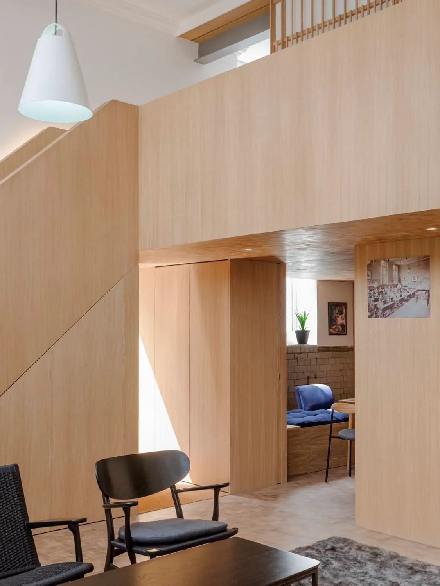
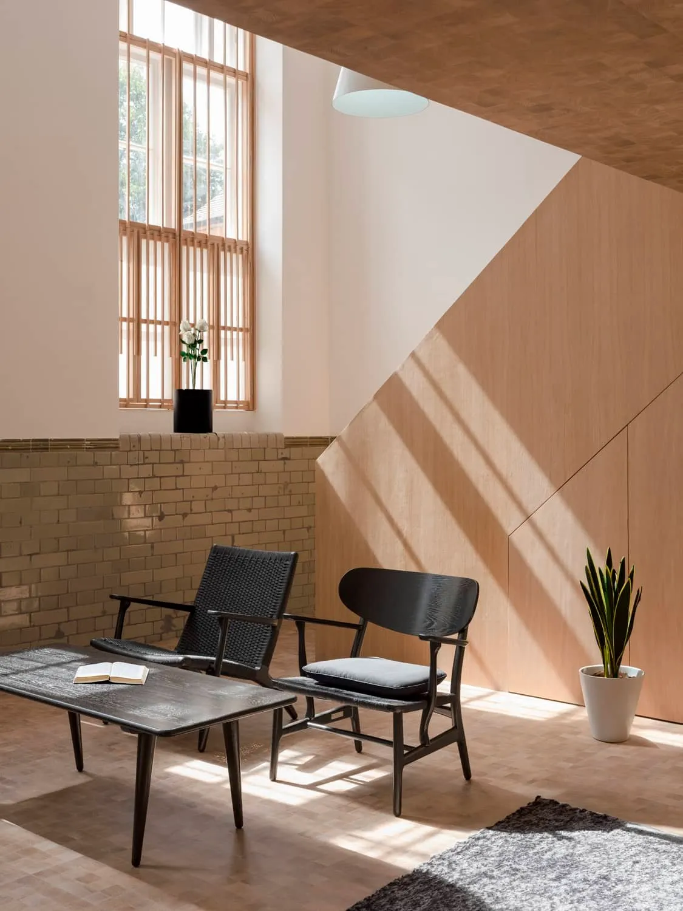
"The level of design quality, professional skill and personal engagement across the team was outstanding throughout."
John Bullough, client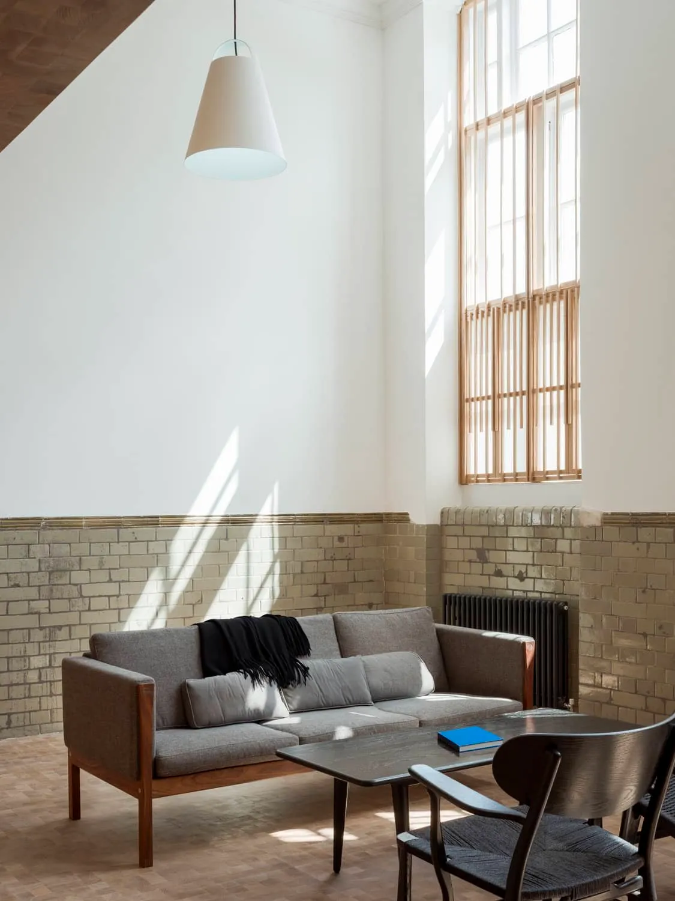
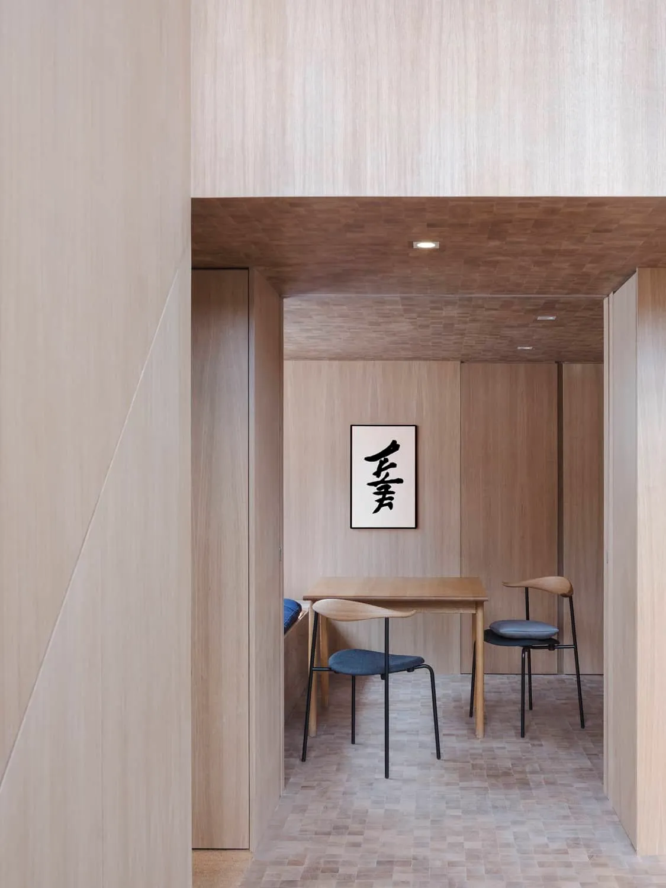
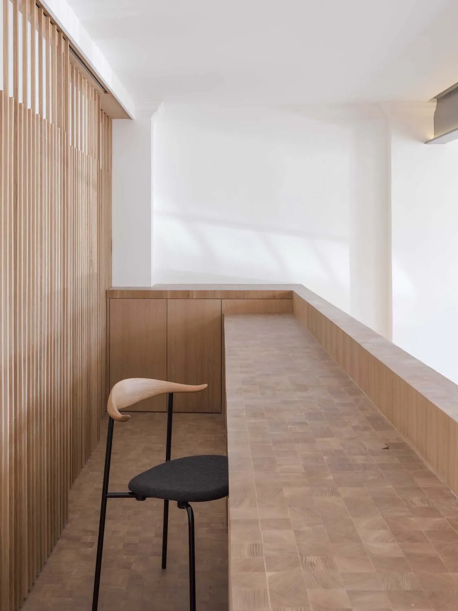
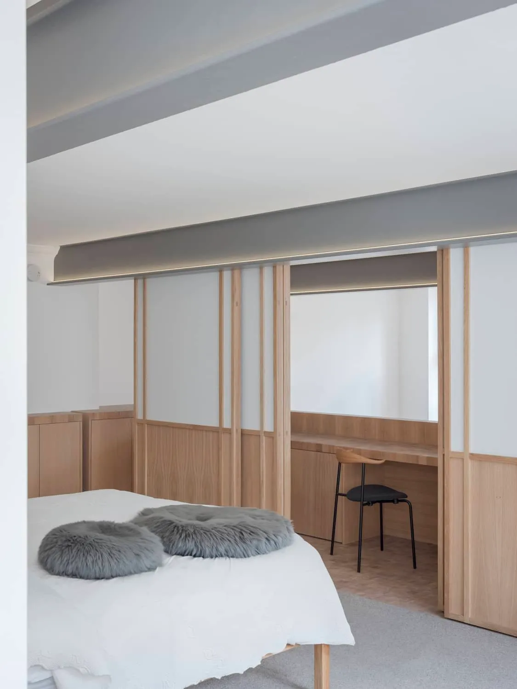
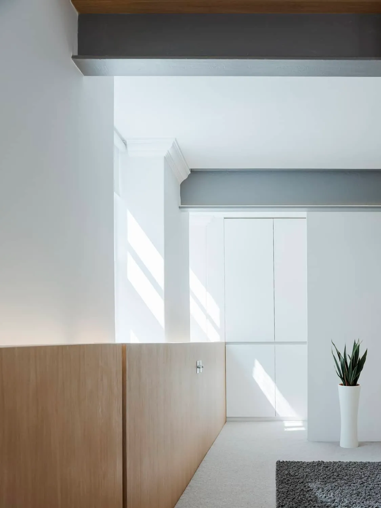
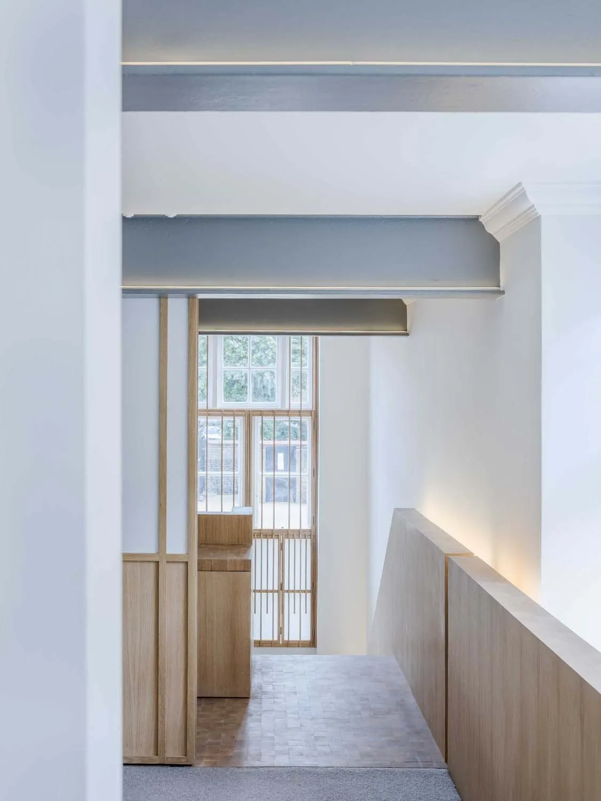
What it's made of.
Where it appeared.